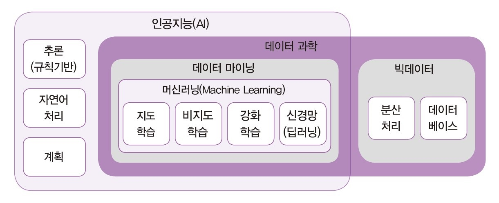
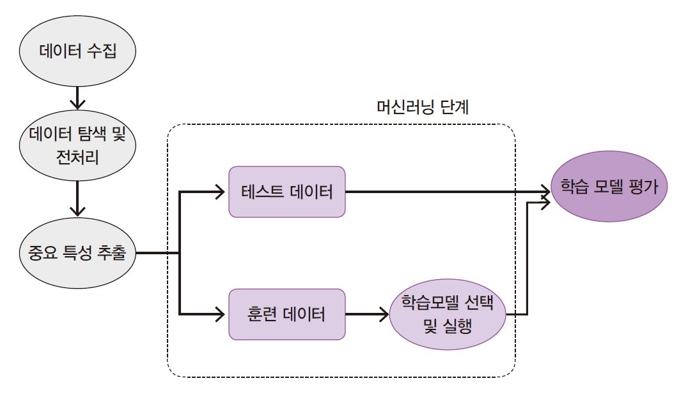
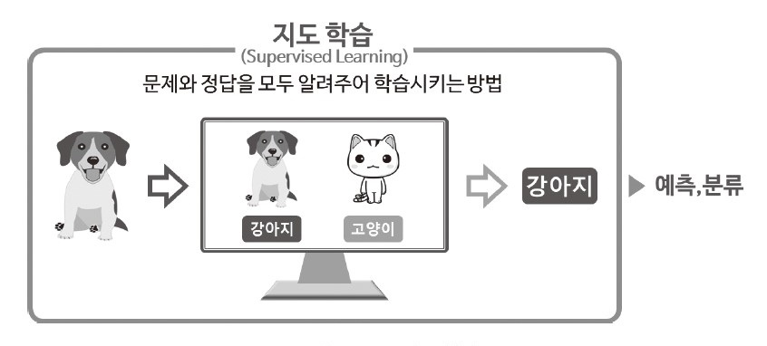
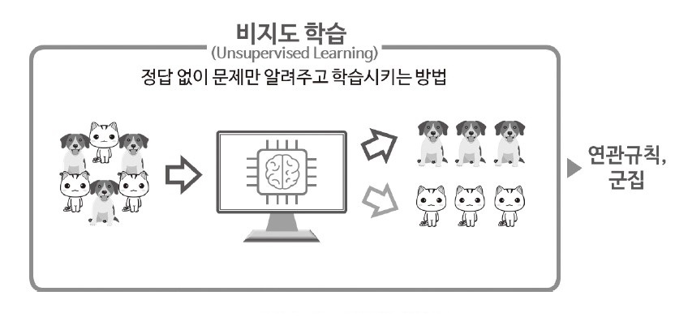
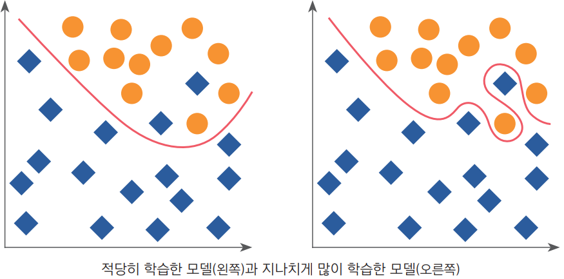

- 머신러닝
7.1. 인공지능
- 인공지능(AI; Artificial Intelligence)
- 컴퓨터가 인간처럼 인식, 사고, 학습, 문제 해결 등의 지능적인 작업을 수행하도록 만드는 기술
- AI는 주어진 데이터를 기반으로 학습하고 판단하기 때문에, 어떤 데이터를 학습시키느냐에 따라 결과가 크게 달라짐
- 편향된 데이터나 잘못된 정보로 학습된 AI는 부정확하거나 차별적인 결과를 내릴 수 있음

7.2. 머신러닝 알고리즘
- 머신러닝(machine learning)
- 컴퓨터가 데이터를 이용하여 스스로 학습하고, 문제 해결에 적합한 알고리즘이나 패턴을 찾아내는 기술
- 학습한 내용을 활용하여 새로운 데이터에 대해 예측하고, 의사결정을 내릴 수 있음
- 피쳐(feature)
- 머신러닝 모델이 입력받는 데이터의 개별 속성(변수)으로, 학습에 사용하는 정보의 단위
- 데이터 전처리를 통해 피쳐를 적절히 가공하고 정제하는 과정은 모델 성능 향상에 매우 중요함
7.2.1. 학습 방식에 따른 분류
- 지도학습(supervised learning)
- 입력 데이터와 해당 데이터에 대한 정답(label)을 함께 사용하여 모델을 학습하는 방법
- 입력과 정답 데이터 간 관계를 학습하고, 새로운 입력 데이터에 대한 결과를 예측하거나 분류함
- 대표적인 알고리즘으로는 선형 회귀, 로지스틱 회귀, 의사결정나무, 랜덤 포레스트, 서포트 벡터 머신(SVM), K-NN 등이 있음
- 비지도학습(unsupervised learning)
- 정답(label) 없이 입력 데이터만을 사용하여 모델을 학습하는 방법
- 데이터 내에 숨겨진 구조나 패턴을 발견하거나, 군집화(clustering)하는데 사용함
- 대표적인 알고리즘으로는 K-Means clustering, DBSCAN, PCA 등이 있음
- 강화학습(reinforcement learning)
- 에이전트가 환경과 상호작용하여 보상은 최대화하고, 패널티는 최소화하는 방향으로 학습하는 방법
- 시행착오를 통해 최상의 행동 방침을 학습하며, 주로 게임, 로봇 제어 등 시뮬레이션에서 사용됨
- 대표적인 알고리즘으로는 Q-러닝, 딥 Q-네트워크(DQN) 등이 있음
  
7.2.2. 과소적합과 과대적합
- 과소적합(underfitting)
- 모델이 학습 데이터를 제대로 이해하지 못해 성능이 낮은 상태
- 주로 다음과 같은 경우에 발생함
- 모델 복잡도가 너무 낮은 경우 (예: 복잡한 문제에 지나치게 단순한 모델에 적용)
- 중요한 피쳐(feature)가 부족한 경우
- 학습이 충분히 이루어지지 않은 경우
- 과대적합(overfitting; 과적합)
- 모델이 학습 데이터에만 과도하게 최적화되어, 새로운 데이터에서 성능이 떨어지는 상태
- 주로 다음과 같은 경우에 발생함
- 모델 복잡도가 너무 높은 경우
- 학습 데이터가 부족한 경우
- 정규화가 부족하여 일반화 성능이 낮은 경우

7.2.3. 데이터 분할
- 지도학습에서는 모델의 과적합을 방지하고 성능을 객관적으로 평가하기 위해 데이터를 여러 세트로 분할함
- 학습 데이터(training data) : 모델이 패턴과 규칙을 학습하는 데 사용
- 검증 데이터(validation data)(선택) : 학습 과정에서 하이퍼파라미터 튜닝이나 과적합 여부 확인에 사용
- 평가 데이터(test data) : 학습에 포함되지 않은 데이터로, 모델의 예측 결과와 실제 정답(label)을 비교하여 모델의 성능을 평가함
- 일반적으로 데이터는 학습:검증:평가를 7:1.5:1.5, 8:1:1 비율로 나눔